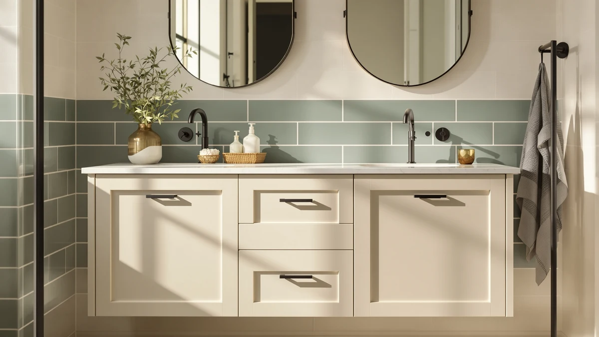

Things to Know Before You Buy
- A freestanding vanity usually costs $100 to $700 and installs in a day; a built-in vanity with a fabricated countertop runs $1,500 to $4,000-plus and takes three to five days.
- Built-ins seal to the wall and floor, which keeps water out of gaps better than most freestanding units.
- Freestanding vanities are easier to swap out later, so they suit rentals and bathrooms you expect to redo again.
- A built-in vanity tends to add more to a home's resale value because it reads as a permanent fixture rather than furniture.
- Measure your rough-in plumbing before you buy either option. A mismatch is the most common reason installs stall.
The bathroom vanity vs built in decision usually surfaces the moment a remodel budget meets a plumbing rough-in that doesn't quite match the fixture you wanted. One option ships flat-packed and bolts together in an afternoon. The other gets built into your walls and floor by a contractor and stays there for the life of the house. Both give you a sink, a counter, and storage, but they get you there through wildly different amounts of money, time, and mess.
We priced units at both ends, from a $99 under-sink cabinet to a $690 double-sink countertop, and mapped out typical install timelines for each approach. Below, we compare build quality, price, and daily use so you can match the choice to your bathroom, your budget, and how long you plan to live with the result.
Quick Answer
A freestanding bathroom vanity wins on price and speed. You can buy one for under $200 and have it installed in a weekend. A built-in vanity wins on durability and resale value, and it fits an oddly shaped bathroom better since a fabricator builds it to your exact measurements. Choose the freestanding vanity if you're on a budget, renting, or updating a small bathroom. Choose the built-in if you're renovating your forever home and want the counter, cabinet, and walls to look like one piece.
What is Bathroom Vanity?
A freestanding bathroom vanity is a self-contained unit: cabinet, countertop, and sink built by a manufacturer and shipped to your door as a kit or a fully assembled piece. You set it in place, hook up the supply lines and drain, and secure it to the wall studs. Most models on the market today, including the Smhxo 24-inch featured in our picks below, arrive with a ceramic or vitreous china sink already mounted to the counter, so you're not sourcing separate parts.
The appeal is flexibility. A vanity comes in standard widths (18, 24, 30, 36, 48, 60, and 72 inches are the common sizes), so you can match one to almost any bathroom footprint without custom carpentry. When the bathroom vanity vs built in question comes up in a small rental or a starter home, the freestanding option usually wins because it doesn't require permanent modifications to the room. If you move or change your mind on style, you unbolt it and take it with you, or sell the old one and swap in something new.
The tradeoff is fit and finish. Because it's built off-site to a standard size, a freestanding vanity leaves small gaps at the wall and floor that a contractor has to caulk rather than seal into the structure. It's furniture, not architecture, and it looks and behaves like furniture.
What is Built In?
A built-in vanity is assembled on site from separate components: base cabinetry, usually custom or semi-custom, topped with a countertop that a fabricator cuts and installs to fit your exact wall-to-wall measurements. Granite, quartz, and solid surface are the common counter materials, and the sink can be dropped in, undermounted, or integrated directly into the slab like the TUKTUK 72-inch double-sink top in our picks.
Because a fabricator templates the space after the cabinets go in, a built-in vanity closes every gap between the counter, the backsplash, and the wall. There's no seam to caulk later and no standard width to compromise on. If your bathroom has an odd corner, a low window, or plumbing that doesn't sit where a factory vanity expects it, a built-in solves that problem instead of forcing you around it.
That precision comes with a longer timeline. A built-in vanity involves a plumber, a cabinet installer, and a countertop fabricator, coordinated across a template visit, a fabrication window, and an install day. In the bathroom vanity vs built in comparison, this is the option you choose when you're renovating once and want the result to last as long as the house does.
Head-to-Head: Build Quality & Durability
Built-ins hold the durability edge in most bathrooms. A sealed quartz or solid surface counter, like the one on the TUKTUK 72-inch top, resists chips, stains, and water spots better than the laminate or engineered wood tops found on most freestanding vanities. The seamless installation also matters more than the counter material itself: without a gap between the counter and the wall, water can't wick into the cabinet or the drywall behind it, which is where mold and swelling usually start.
Freestanding vanities aren't fragile, but they depend more on the manufacturer's material choices. Engineered wood with a water-resistant coating, like the Cozivellia cabinet in our picks, holds up fine in a normal bathroom with decent ventilation. MDF without that coating swells if water sits at the base for more than a day or two. Stainless steel hinges and hardware, which both the Smhxo and Cozivellia units include, add years of life over the cheap zinc hardware still common on budget models.
For a bathroom with a shower and heavy daily humidity, a built-in's sealed installation gives it a real edge. For a powder room or guest bath with light use, a well-built freestanding vanity holds up equally well. The bathroom vanity vs built in durability gap narrows a lot once you factor in ventilation and how often the room actually gets wet.
Head-to-Head: Price & Value
Price is where the bathroom vanity vs built in gap gets widest. A freestanding vanity like the Cozivellia under-sink cabinet runs under $100, and even a larger double-sink unit with a solid surface top, like the TUKTUK 72-inch, tops out under $700. Add basic plumbing hookup labor and you're usually done for $800 to $900 total.
A built-in vanity starts higher and climbs fast. Custom or semi-custom cabinetry, a fabricated countertop, and coordinated plumber and installer labor typically land between $1,500 and $4,000 for a standard single-sink bathroom, more for a double-sink layout or premium stone. You're paying for the template visit, the fabrication, and skilled labor at every step, on top of the materials.
Value depends on your time horizon. A freestanding vanity gets you a functional bathroom for a fraction of the cost, and it's the better dollar-per-year value if you plan to sell or renovate again within five to ten years. A built-in costs more upfront but tends to hold its value better at resale, since buyers and appraisers read it as a fixed improvement rather than furniture you could take with you.
Head-to-Head: Use Experience
Day to day, both options do the same job: you get a sink, a counter for your routine, and storage underneath. The differences show up at the edges. A built-in counter runs flush into the wall, so you never have to clean around a gap or worry about a seam trapping toothpaste and hair product. A freestanding vanity leaves a thin reveal at the backsplash that needs an occasional wipe and, eventually, a bead of fresh caulk.
Storage tends to favor whichever unit you actually chose to fit your space rather than the category itself. The Cozivellia cabinet in our picks splits its interior into an open desktop zone for daily items and an enclosed double-door cabinet for towels and supplies, which is a layout you'll find on both freestanding and built-in units. What changes with a built-in is customization: you can request extra drawers, dividers, or a taller counter for a specific household, options a factory vanity doesn't offer.
Installation disruption is the other real difference in daily life. Swapping a freestanding vanity takes your bathroom out of service for a day, sometimes less. A built-in project can leave you without a working sink for the better part of a week while the counter gets templated and fabricated. If you only have one bathroom, that gap matters as much as anything else in the bathroom vanity vs built in decision.
When to Choose Bathroom Vanity
In the bathroom vanity vs built in decision, pick a freestanding vanity if you're working with a tight budget, a rental you don't own, or a bathroom you expect to update again within the next several years. It's also the right call for a fast turnaround: if your household only has one bathroom and can't go a week without it, a vanity you install in a day keeps the disruption to a minimum.
It also makes sense for standard-size bathrooms where a factory width, 24, 30, 36, or 48 inches, already matches your layout. In that case you're not paying for custom fabrication to solve a problem you don't have. Compare a few widths and finishes side by side before you commit, since price and material quality vary more within the freestanding category than the sticker price alone suggests.
When to Choose Built In
Choose a built-in vanity when you're renovating a forever home, dealing with an oddly shaped bathroom, or want the bathroom to read as a finished, permanent space rather than a room furnished with a standalone piece. It's also the stronger move ahead of a sale, since a built-in tends to show better to buyers and appraisers than a freestanding cabinet.
Budget for the full timeline, not only the sticker price. Between the template visit, fabrication, and coordinated plumbing and installation, expect a built-in project to take a week or more from order to finished bathroom. If you're weighing bathroom vanity vs built in options for a full remodel where the vanity is one piece of a bigger project, that timeline is easier to absorb since the bathroom is already out of commission.
Our Top Picks
If you're going the freestanding route, these three cover the range from a compact under-sink cabinet to a wide double-sink top that gets you closer to a built-in look without the fabrication timeline.

Editor’s Pick
Smhxo Bathroom Vanity with Ceramic
A 24-inch ceramic-sink vanity that assembles in under 30 minutes, built for small bathrooms and tight budgets.
$139.99
Check Price on Amazon
Best Value
Cozivellia Bathroom Vanity Sink Cabinet
Under $100 with pre-cut cutouts for sink plumbing and water-resistant construction that outlasts typical budget vanities.
$99.99
Check Price on Amazon
Premium Choice
72 x 22 White Vanity
A 72-inch double-sink solid surface top that gives you a seamless, built-in look without the fabrication wait.
$689.99
Check Price on AmazonFrequently Asked Questions
Is a built-in vanity worth the extra cost?
For a primary bathroom you plan to keep for years, yes. A built-in adds resale value and fits the space exactly, which a standalone vanity can't match. For a rental or a bathroom you might redo in a few years, a freestanding vanity gets you most of the benefit for a fraction of the price.
Can I install a bathroom vanity myself, or do I need a contractor?
Most freestanding vanities ship with hardware and instructions that a homeowner can follow in an afternoon, especially if the plumbing rough-in already matches. A built-in almost always needs a licensed plumber and a carpenter or cabinet installer, since the countertop, cabinetry, and water lines all have to line up to the millimeter.
Which option holds up better in a humid bathroom?
Built-ins generally win here because installers seal the countertop to the wall and cabinetry, closing off the gaps where moisture collects. A quality freestanding vanity with water-resistant engineered wood, like the Cozivellia model in our picks, closes most of that gap without the sealed seams.
Does a built-in vanity increase home resale value more than a standalone one?
Appraisers and real estate agents tend to credit built-ins more, since they read as a permanent bathroom upgrade rather than furniture. A freestanding vanity still improves how a bathroom shows, but it doesn't carry the same weight on an appraisal report.
How long does each option take to install?
A freestanding vanity typically goes in within a day, sometimes a few hours if the plumbing already lines up. A built-in vanity usually runs three to five days once you count template measuring, cabinet installation, countertop templating and fabrication, and final plumbing hookup.
Final Verdict
The bathroom vanity vs built in debate doesn't have a single winner. It comes down to your bathroom, your budget, and your timeline. A built-in earns its higher price in durability and resale value for a forever home. For most budgets and rentals, though, a freestanding vanity like the Smhxo 24-inch gets you a finished bathroom in a day for a fraction of the cost, and it's our pick for anyone who isn't ready to commit to a full renovation.